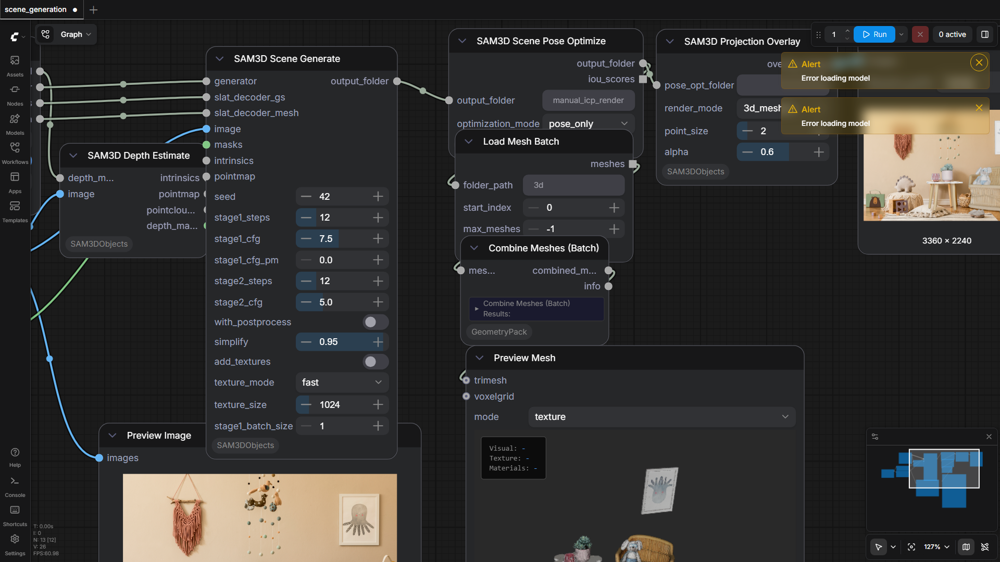

100.0%
5 passed
5/5 tests
Workflows

debug_large_image_results
pass

full_generation
pass

gaussian_generation
pass

mesh_generation
pass

scene_generation
pass
Downloaded Models
42 files · 13.9 GBmodels/sam3dobjects/
ss_generator.safetensors6.2 GB
slat_generator.safetensors4.6 GB
moge_vitl.safetensors1.2 GB
dinov2_vitl14_reg.safetensors1.1 GB
slat_decoder_mesh.safetensors346.9 MB
slat_decoder_gs.safetensors163.5 MB
slat_decoder_gs_4.safetensors162.4 MB
ss_decoder.safetensors140.8 MB
ss_generator.yaml5.0 KB
pipeline.yaml3.5 KB
slat_generator.yaml1.9 KB
slat_decoder_gs.yaml576.0 B
slat_decoder_gs_4.yaml575.0 B
moge_vitl_config.json343.0 B
slat_decoder_mesh.yaml300.0 B
ss_decoder.yaml244.0 B
.cache\huggingface\CACHEDIR.TAG195.0 B
.cache\huggingface\download\dinov2_vitl14_reg.safetensors.metadata128.0 B
.cache\huggingface\download\moge_vitl.safetensors.metadata128.0 B
.cache\huggingface\download\slat_decoder_gs.safetensors.metadata128.0 B
.cache\huggingface\download\slat_decoder_gs_4.safetensors.metadata128.0 B
.cache\huggingface\download\slat_decoder_mesh.safetensors.metadata128.0 B
.cache\huggingface\download\slat_generator.safetensors.metadata128.0 B
.cache\huggingface\download\ss_generator.safetensors.metadata128.0 B
.cache\huggingface\download\ss_decoder.safetensors.metadata127.0 B
.cache\huggingface\download\moge_vitl_config.json.metadata104.0 B
.cache\huggingface\download\pipeline.yaml.metadata104.0 B
.cache\huggingface\download\slat_decoder_gs.yaml.metadata104.0 B
.cache\huggingface\download\slat_decoder_mesh.yaml.metadata104.0 B
.cache\huggingface\download\slat_generator.yaml.metadata104.0 B
.cache\huggingface\download\ss_decoder.yaml.metadata104.0 B
.cache\huggingface\download\ss_generator.yaml.metadata104.0 B
.cache\huggingface\download\slat_decoder_gs_4.yaml.metadata103.0 B
.cache\huggingface\.gitignore1.0 B
models/vae_approx/
taef1_encoder.safetensors2.4 MB
taesd3_encoder.safetensors2.4 MB
taef1_decoder.safetensors2.4 MB
taesd3_decoder.safetensors2.4 MB
taesdxl_decoder.safetensors2.3 MB
taesd_decoder.safetensors2.3 MB
taesdxl_encoder.safetensors2.3 MB
taesd_encoder.safetensors2.3 MB